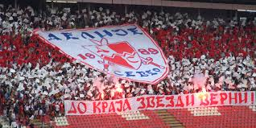

Спортско друштво Црвена Звезда
О спортском друштву Црвена Звезда
Спортско друштво Црвена Звезда из Београда је спортско друштво које обухвата велики број клубова који се такмиче у одређеним спортским дисциплинама. Клубови Црвене Звезде су освојили 667 трофеја. Од тога 649 титула националног шампиона, националног купа или суперкупа, 8 титула европског првака, 7 титула регионалног шампиона и 3 титуле светског првака. Црвена Звезда је најуспешније спортско друштво у Србији.
Навијачи СД Црвена Звезда називају се Делије Север. У оквиру спортског друштва постоје готово сви спортови, али најпознатији је "ФК Црвена звезда.
Историја
Црвена звезда је основана 4. марта 1945. године у једној малој сали у Делиградској улици у Београду. Као оснивачи се помињу Слободан Ћосић и Зоран Жујовић.

Годину дана касније, Црвена звезда се спаја са фискултурним друштвом "Студент" и постаје Омладинско-студентско фискултурно друштво Црвена звезда. 1948. године секције друштва прерастају у клубове, а већ наредне 1949. године асоцијација тих клубова прераста у Спортско-друштво Црвена звезда. Убрзо се формирају и многи други клубови.
Почетак седамдесетих је означен као први златни период спортског друштва. Илустрације ради: у 1972. години СД Црвена звезда је у сениорској конкуренцији имала 12 екипних шампиона Југославије, 6 победника Купа, кошаркашки победници Купа победника Купова Европе, а 4 екипе играле су у полуфиналу Купа европских шампиона. "Други златни период" за спортско друштво десио се осамдесетих и почетком деведесетих. Поред великог броја домаћих титула, Црвена звезда постаје још битнија на читавом континенту. Прво кошаркашице долазе до титуле Шампиона Европе, затим титулу првака Европе освајају атлетичари, а након тога и фудбалери поред титуле првака Европе придодају и Интерконтинентални куп - трофеј намењен најбољем клубу на свету. Поред екипних, дошло је и до индивидуалних успеха: тенисер Боба Живојиновић се пробио у сам светски врх; за апсолутно и званично најбољу на планети проглашена је Јасна Шекарић; Драгутин Топић постаје европски шампион и јуниорски рекордер.
2015. године Кошаркашки клуб освајањем титуле првака Србије долази до 600. трофеја у историји спортског друштва.
Списак клубова
Звезда и тимски спортови
| Спорт |
Име клуба |
Основан |
| Фудбал |
ФК Црвена Звезда |
1945. |
| Фудбал - женски |
ЖФК Црвена Звезда |
2011. |
| Кошарка |
КК Црвена Звезда |
1945. |
| Кошарка - женска |
ЖКК Црвена Звезда |
1945. |
| Одбојка |
ОК Црвена Звезда |
1945. |
| Одбојка - женска |
РК Црвена Звезда |
1946. |
| Рукомет |
ЖРК Црвена Звезда |
1948. |
| Рукомет - женска |
ОК Црвена Звезда |
1995-2015, 2016.. |
| Ватерполо |
ВК Црвена Звезда |
1945-2008, 2010. |
| Ватерполо - женска |
ЖВК Црвена Звезда |
2013 |
Олимпијске медаље
Златне олимпијске медаље
| Такмичар(и) |
Олимпијске игре |
Спорт |
| Владимир Дурковић, Бора Костић, Душан Маравић |
1960. Рим |
Фудбал |
| Милан Лазаревић |
1972. Минхен |
Рукомет |
| Зоран Славнић |
1980. Москва |
Кошарка |
| Милан Калина, Бранко Штрбац |
1984. Лос Анђелос |
Рукомет |
| Јасна Шекарић |
1988. Сеул |
Стрељаштво |
| Одбојка - женска |
РК Црвена Звезда |
1946. |
| Рукомет |
ЖРК Црвена Звезда |
1948. |
| Рукомет - женска |
ОК Црвена Звезда |
1995-2015, 2016.. |
| Ватерполо |
ВК Црвена Звезда |
1945-2008, 2010. |
| Ватерполо - женска |
ЖВК Црвена Звезда |
2013 |
Навијачи
Oд самог заснивања клуба најистакнутије личности нашег друштва биле су често виђене на утакмицама на Малом Калемегдану. Популарност је расла са сталним успесима како кошаркашког клуба, али пре свега фудбалског клуба. Црвена звезда је српски клуб са највећим бројем навијача према већини истраживања која су спроведена у Београду, а и на територији читаве Србије. Навијачи Црвене звезде се називају Делије. Ова навијачка група настала је уједињењем дотадашњих мањих навијачких група 7. јануара 1989.

Навијачи Црвене звезде и Олимпијакоса развили су дубоко пријатељство. Навијачи оба тима су себе назвали „Православна браћа“ („Orthodox Brothers“). У ову братску унију навијача касније су се укључили и навијачи Спартака из Москве.